常用功能
要素添加
添加点要素
添加线要素
添加面要素
添加标注
读取数据
kml/kmz数据
shp数据
添加图片
您的浏览器不支持 HTML5 canvas 标签。
小
中
大
保 存
退 出
清 除
橡 皮
直 线
三 角
圆 圈
椭 圆
画 笔
添加点
符号：
描述内容：
字体：
雅黑
宋体
隶书
楷体
幼圆
仿宋
颜色:
大小:
6
8
10
12
14
16
18
20
完 成
符号编辑
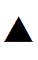
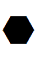
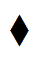 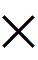
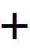 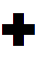 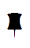
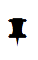 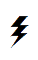
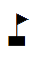 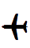
当前符号：
颜色：
大小：
1
2
3
4
5
6
7
8
9
10
确定
取消
添加图片
图片名称：
中心位置：
修改
描述内容：
缩放比例：
0.01
0.05
0.25
0.5
0.75
1
1.25
1.5
完 成
添加线条
提示：单击绘制线条，双击绘制另一个线条，右击停止绘制。
样式：
实线
虚线
点线
线宽：
0.25
0.5
0.75
1
1.25
1.5
1.75
2
透明度：
0.2
0.4
0.6
0.8
0.9
1
颜色：
完 成
添加图形
提示：单击绘制图形，双击绘制另一个图形，右击停止绘制。
轮廓线样式：
实线
虚线
点线
轮廓线宽：
0.25
0.5
0.75
1
1.25
1.5
1.75
2
轮廓线透明度：
0.2
0.4
0.6
0.8
0.9
1
轮廓线颜色：
填充透明度：
0.2
0.4
0.6
0.8
0.9
1
填充颜色：
完 成
文本标注
标注内容：
轮廓线宽：
0.25
0.5
0.75
1
1.25
1.5
1.75
2
轮廓线颜色：
旋转角度：
0
15
30
45
60
75
90
105
120
135
150
165
180
背景颜色：
字体样式：
雅黑
宋体
隶书
楷体
幼圆
仿宋
字体大小：
6
8
10
12
14
16
18
20
文字颜色：
完 成
 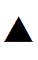
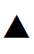